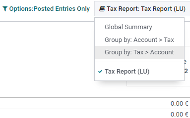

Luxembourg¶
Configuration¶
Install the following modules to get all the features of the Luxembourgish localization:
Name |
Technical name |
Description |
|---|---|---|
Luxembourg - Accounting |
|
Default fiscal localization package |
Luxembourg - Accounting Reports |
|
Country-specific reports |
Luxembourg - Annual VAT Report |
|
Country-specific reports |
Tip
Installing the module Luxembourg - Accounting Reports installs all three modules at once.
Standard Chart of Accounts - PCN 2020¶
Odoo’s fiscal localization package for Luxembourg includes the current Standard Chart of Accounts (PCN 2020), effective since January 2020.
eCDF tax return¶
Tax returns in Luxembourg require a specific XML file to upload on the eCDF.
To download it, go to , and click on Export eCDF declaration.
Annual tax report¶
You can generate an XML file to electronically file your annual tax report with the tax office.
To do so, go to , click on Create, then define the annual period in the Year field.
The simplified annual declaration is automatically generated. You can manually add values in all the fields to get a complete annual declaration.

To help you complete it, you can use the information provided on the Tax Report. To do so, go to , then click on the Tax Report dropdown menu and select the type of report you want to display.
Finally, click on Export XML to download the XML file.
Note
This feature requires the module Luxembourg - Annual VAT Report to be installed.
FAIA (SAF-T)¶
FAIA (Fichier d’Audit Informatisé AED) is a standardized and structured file that facilitates the exchange of information between the taxpayers’ accounting system and the tax office. It is the Luxembourgish version of the OECD-recommended SAF-T (Standard Audit File for Tax).
Odoo can generate an XML file that contains all the content of an accounting period according to the rules imposed by the Luxembourg tax authorities on digital audit files.
Note
This feature requires the module Luxembourg - Accounting Reports to be installed.
Export FAIA file¶
Go to , then click on FAIA.